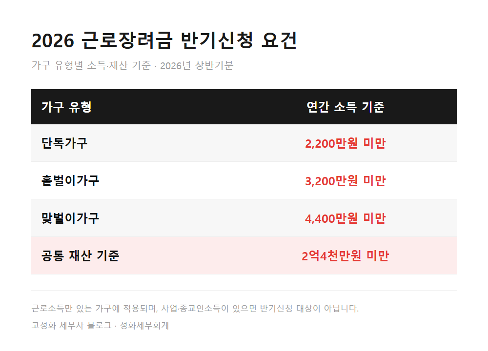
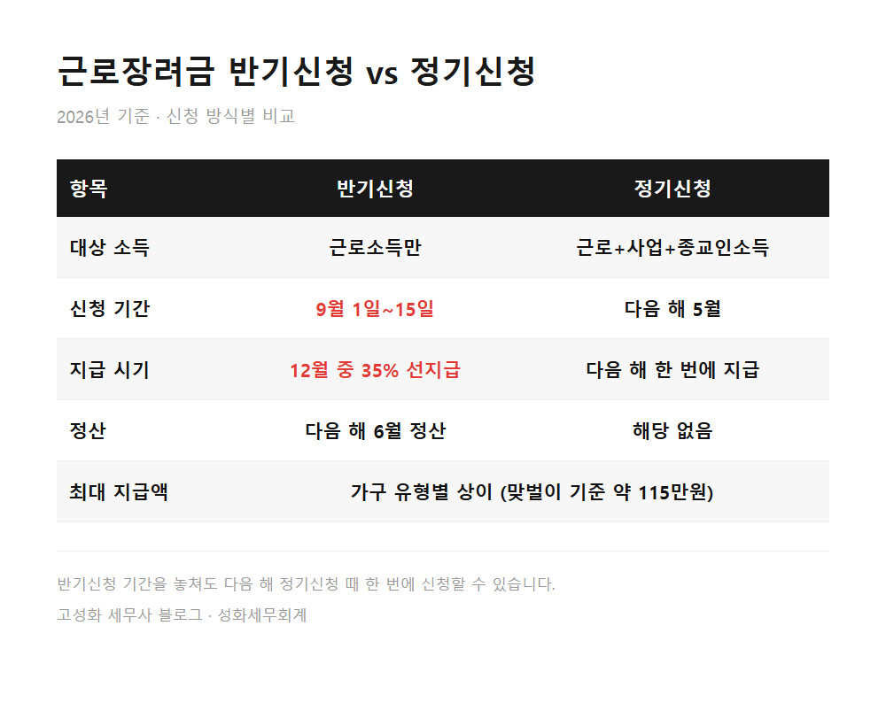
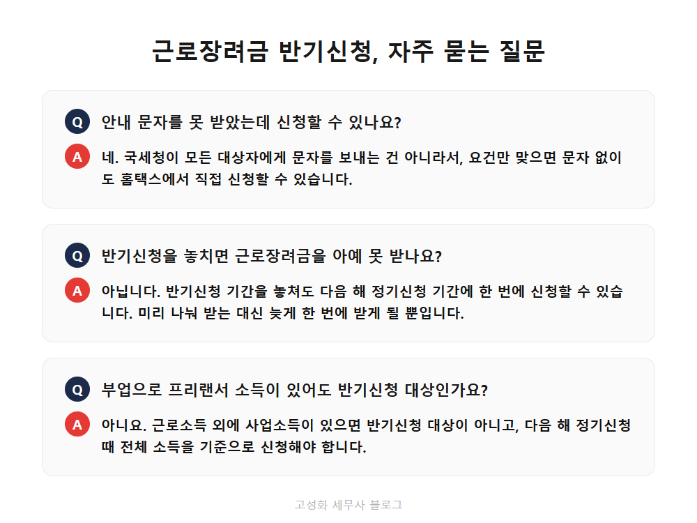

근로장려금 반기신청, 115만원 받는 법

성화세무회계에는 요즘 근로장려금 안내 문자를 받고 전화를 주시는 분들이 있습니다. 문자에 적힌 금액이 맞는지, 정말 신청만 하면 되는 건지 궁금해하십니다. 사실 이 제도는 국세청이 알아서 챙겨주는 게 아니라 기한 안에 직접 신청해야 받을 수 있습니다. 저희는 상담할 때 이 부분을 가장 먼저 짚어드립니다.
9월 15일까지가 2026년 상반기 근로장려금 반기신청 기간입니다. 문자를 못 받으신 분도 대상이 될 수 있고, 반대로 문자를 받았어도 실제로는 대상이 아닐 수 있습니다. 이 글을 보고 계신 분은 아마 ① 안내 문자를 받았는데 진짜 신청해도 되는지 헷갈리거나, ② 직장을 다니면서 프리랜서 일도 겸하고 있어 대상인지 애매하거나, ③ 이미 기간을 놓친 건 아닌지 걱정하고 계신 분일 겁니다. 자격 조건과 신청 방법을 하나씩 정리해 드리겠습니다.
- 근로장려금 반기신청, 누가 받을 수 있나요
- 사업소득과 섞여 있으면 이야기가 달라집니다
한눈에 보기



정리하면
근로장려금 반기신청은 근로소득만 있는 가구가 9월 15일까지 신청하면 12월에 먼저 일부를 받을 수 있는 제도입니다. 사업소득이 섞여 있거나 재산 기준을 넘으면 대상이 아니라는 점, 문자를 못 받아도 신청은 가능하다는 점을 꼭 기억해두시기 바랍니다.
소득 구성이 단순하다면 홈택스에서 몇 분이면 끝나는 일입니다. 다만 부업이나 프리랜서 소득이 섞여 있어 대상 여부가 헷갈리신다면, 마감일 전에 자료를 들고 편하게 문의해 주세요. 한 번만 확인받아 두면 다음 신청 때도 헤매지 않습니다.
본문 전체와 근거 조문은 블로그에서 확인하실 수 있습니다.